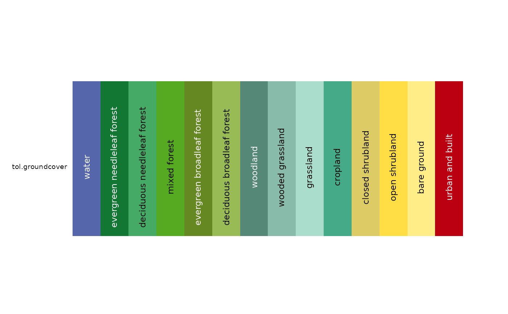

Color palettes designed for discrete, categorical data with a small number of categories.
Usage
alphabet(n = 26)
alphabet2(n = 26)
cols25(n = 25)
glasbey(n = 32)
kelly(n = 22)
polychrome(n = 36)
stepped(n = 24)
stepped2(n = 20)
stepped3(n = 20)
okabe(n = 8)
tableau20(n = 20)
tol(n = 12)
tol.groundcover(n = 14)
trubetskoy(n = 22)
watlington(n = 16)Details
The alphabet palette has 26 distinguishable colors that have logical names
starting with the English alphabet letters A, B, ... Z.
This palette is based on the work by Green-Armytage (2010), but uses the
names 'orange' instead of 'orpiment', and 'magenta' instead of 'mallow'.
The alphabet2 palette uses a similar idea with slightly different colors
and slightly different names. This palette comes from the Polychrome package,
generated with the createPalette function and then manually
arranged and named.
The cols25 palette was created experimentally by Wright (unpublished)
to create a set of colors that are distinct.
The glasbey palette by Glasbey et al (2007) has 32 colors that are
maximally distinct. Glasbey has 'white' as the second color, but in this
version of the palette, the color 'white' is moved to the end, and is
actually light-gray, #F2F3F4.
The kelly palette of 22 colors maximize the contrast
between colors in a set if the colors are chosen in sequential order.
Kelly paid attention to the needs of people with color blindness. The
first nine colors work well for such people and people with normal vision.
Kelly did not provide RGB color values, and the paper was in black-and-white.
A color image of the Kelly palette can be found in Green-Armytage (2010).
The color 'white' has been re-defined as light-gray, #F2F3F4.
Commentary: We think the kelly palette has an over-abundance of orange-ish
colors, the purples are not very distinct, color 22 (olive green) is almost
identical to color 2 (black), etc. Trubetskoy says "towards the bottom of
Kelly's list things get complicated. The orange yellow, purplish red,
yellowish brown and reddish orange all seemed to blend together".
The okabe palette was design to be (1) clear for both colorblind and
non-colorblind people, (2) vividly colored, and (3) good for screen and printed.
The color-blind simulation tools in R suggest this palette is not as useful
as hoped.
The polychrome palette is also from the Polychrome package.
Colors were given a name from the ISCC-NBS standard.
The stepped palette has 24 colors (5 hues, 4 levels within each hue, plus
4 shades of gray) that is useful for showing varying levels within categories.
Inspired by (http://geog.uoregon.edu/datagraphics/color_scales.htm), but in
order to better separate these colors in RGB space, red hue 0 was moved to hue 350,
green hue 80 moved to hue 90. The number of colors within each hue was reduced
from 5 to 4, and gray shades were added.
stepped2 and stepped3 are from the 'vega' package
https://github.com/vega/vega/wiki/Scales.
The tableau20 palette has 10 pairs of dark/light colors that are used by
the Tableau software.
The trubetskoy palette as 20 colors, plus black and white.
The colors are designed to be easily distinguishable, tastefully luminant,
intuitively named, supplied with RGB colors.
https://sashamaps.net/docs/resources/20-colors/
The tol palette has 12 colors by Paul Tol.
The watlington palette has 16 colors.
The color 'white' has been re-defined as light-gray, #F2F3F4.
References
Robert M. Boynton. (1989) Eleven Colors That Are Almost Never Confused. Proc. SPIE 1077, Human Vision, Visual Processing, and Digital Display, 322-332. http://doi.org/10.1117/12.952730
Kevin R. Coombes (2016). Polychrome. https://rdrr.io/rforge/Polychrome/man/alphabet.html
Chris Glasbey, Gerie van der Heijden, Vivian F. K. Toh, Alision Gray (2007). Colour Displays for Categorical Images. Color Research and Application, 32, 304-309. http://doi.org/10.1002/col.20327
P. Green-Armytage (2010): A Colour Alphabet and the Limits of Colour Coding. Colour: Design & Creativity (5) (2010): 10, 1-23. www.aic-color.org/journal/v5/jaic_v5_06.pdf
K. Kelly (1965): Twenty-two colors of maximum contrast. Color Eng., 3(6), 1965. http://www.iscc.org/pdf/PC54_1724_001.pdf
Masataka Okabe and Kei Ito (2002). Color Universal Design (CUD) - How to make figures and presentations that are friendly to Colorblind people. http://jfly.iam.u-tokyo.ac.jp/color/
Paul Tol (2012). Color Schemes. SRON technical note, SRON/EPS/TN/09-002. https://personal.sron.nl/~pault/
Sasha Trubetskoy (2017). List of 20 Simple, Distinct Colors. https://sashamaps.net/docs/resources/20-colors/
John Watlington. An Optimum 16 Color Palette. http://alumni.media.mit.edu/~wad/color/palette.html
Color Schemes Appropriate for Scientific Data Graphics http://geog.uoregon.edu/datagraphics/color_scales.htm
Examples
pal.bands(alphabet, alphabet2, cols25, glasbey, kelly, okabe, polychrome,
tableau20, tol, watlington)
#> Only 26 colors are available with 'alphabet'
#> Only 26 colors are available with 'alphabet2'
#> Only 25 colors are available with 'cols25'.
#> Only 32 colors are available with 'glasbey'.
#> Only 22 colors are available with 'kelly'.
#> Only 8 colors are available with 'okabe'.
#> Only 36 colors are available with 'polychrome'.
#> Only 20 colors are available with 'tableau20'.
#> Only 12 colors are available with 'tol'
#> Only 16 colors are available with 'watlington'.
pal.bands(stepped, stepped2, stepped3)
#> Only 24 colors are available with 'stepped'
#> Only 20 colors are available with 'stepped2'.
#> Only 20 colors are available with 'stepped3'.
pal.bands(tol.groundcover)
#> Only 14 colors are available with 'tol.groundcover'

if (FALSE) { # \dontrun{
alphabet()
alphabet()["jade"]
pal.bands(alphabet,n=26)
pal.heatmap(alphabet)
# pal.cube(alphabet)
pal.heatmap(alphabet2)
pal.heatmap(cols25)
pal.heatmap(glasbey())
# pal.cube(glasbey, n=32) # Blues are close together
pal.heatmap(kelly()) # too many orange/pink colors
pal.safe(okabe()) # not great
pal.heatmap(polychrome)
pal.heatmap(stepped, n=24)
pal.heatmap(stepped2, n=20)
pal.heatmap(stepped3, n=20)
pal.heatmap(tol, 12)
pal.heatmap(watlington(16))
} # }